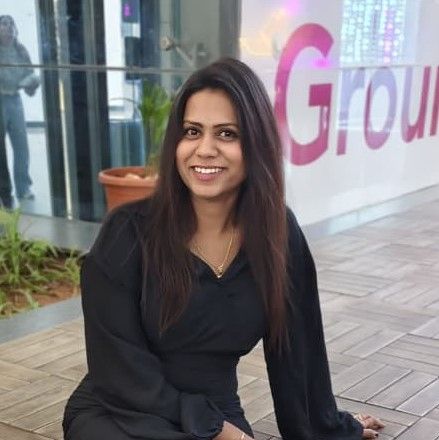

Engineer specializing in UAV system integration, flight testing, and diagnostics of PX4 and ArduPilot autonomous platforms. Focused on system reliability, telemetry analysis, and UAV performance validation.

Aeronautical engineer with professional experience in UAV system integration, flight testing, and autonomous platform validation using Pixhawk-based flight control systems.
My work focuses on diagnosing UAV system behaviour through flight log diagnostics including EKF health analysis, vibration characterisation, GPS validation, and telemetry performance monitoring.
UAV system integration, diagnostics and technical support for drone platforms used in agriculture and mapping.
Led UAV flight testing activities including system validation, stability testing and flight performance evaluation.
Conducted structured flight tests, telemetry diagnostics and UAV behaviour analysis.